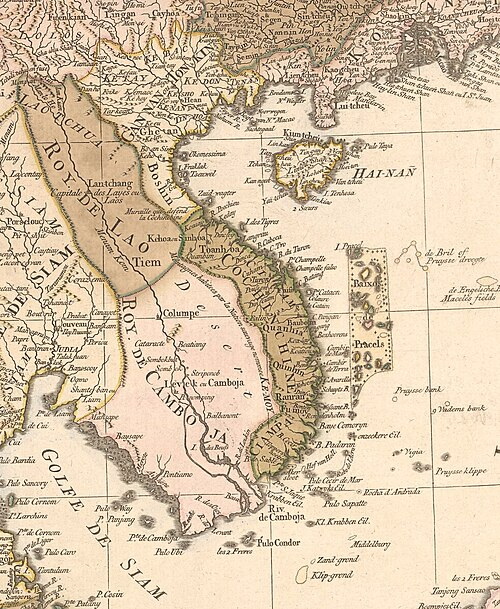

Main article: History of Cambodia
Prehistory
Main article: Early history of Cambodia
There exists evidence for a Pleistocene human occupation of what later is Cambodia, which includes quartz and quartzite pebble tools found in terraces along the Mekong River, in Stung Treng and Kratié provinces, and in Kampot province.[26] Some archaeological evidence shows communities of hunter-gatherers inhabited the region during the Holocene: the most ancient archaeological discovery site in Cambodia is considered to be the cave of Laang Spean, which belongs to the Hoabinhian period. Excavations in its lower layers produced a series of radiocarbon dates around 6000 BC.[26][27] Upper layers in the same site gave evidence of transition to Neolithic, containing the earliest dated earthenware ceramics in Cambodia.[28]
Archaeological records for the period between the Holocene and Iron Age remain equally limited. An event in prehistory was the penetration of the first rice farmers from the north, which began in the third millennium BC.[29] Prehistoric evidence are the "circular earthworks" discovered in the red soils near Memot and in the adjacent region of Vietnam in the latter 1950s. Their function and age are still debated, and some of them possibly date from the second millennium BC.[30][31] Other prehistoric sites of somewhat uncertain date are Samrong Sen (not far from the ancient capital of Oudong), where the first investigations began in 1875,[32] and Phum Snay, in the northern province of Banteay Meanchey.[33]
Iron was worked by about 500 BC, with supporting evidence coming from the Khorat Plateau, in what later is Thailand. In Cambodia, some Iron Age settlements were found beneath Baksei Chamkrong and other Angkorian temples while circular earthworks were discovered at the site of Lovea kilometres north-west of Angkor. Burials testify to improvement of food availability and trade, and the existence of a social structure and labour organisation.[34] Kinds of glass beads recovered from sites, such as the Phum Snay site in the northwest and the Prohear site in the southeast, suggest that there were two main trading networks at the time. The two networks were separated by time and space, which indicate that there was a shift from one network to the other at about the 2nd–4th century AD, probably due to changes in socio-political powers.[34]
Pre-Angkorian, Angkorian, and Post-Angkor
Main articles: Kingdom of Funan, Chenla, Khmer Empire, and Post-Angkor Period Angkor Wat Faces of Bodhisattva Avalokiteshvara at Prasat Bayon During the 3rd, 4th, and 5th centuries, the Indianised states of Funan and its successor, Chenla, coalesced in what later is Cambodia and southwestern Vietnam. For more than 2,000 years, what was to become Cambodia absorbed influences from India, passing them on to other Southeast Asian civilisations that later became Thailand and Laos.[35]
The Khmer Empire grew out of the remnants of Chenla, becoming firmly established in 802 when Jayavarman II (reigned c. 790 – c. 835) declared independence from Java and proclaimed themselves a Devaraja. They and their followers instituted the cult of the God-king and began a series of conquests that formed an empire which flourished in the area from the 9th to the 15th centuries.[36] During the rule of Jayavarman VIII the Angkor empire was attacked by the Mongol army of Kublai Khan; the king was able to buy peace.[37] Around the 13th century, Theravada missionaries from Sri Lanka reintroduced Theravada Buddhism to Southeast Asia, having sent missionaries previously in the 1190s.[38][39] The religion spread and eventually displaced Hinduism and Mahayana Buddhism as the popular religion of Angkor; it was not the official state religion until 1295 when Indravarman III took power.[40]
